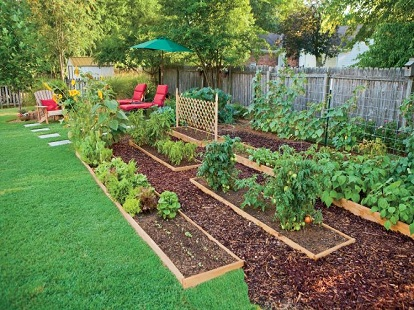
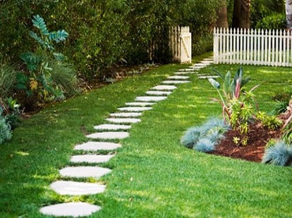
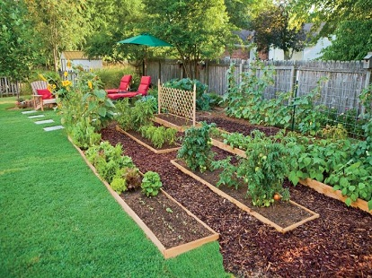
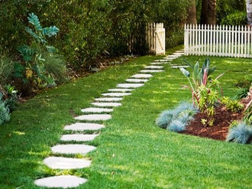

Landscaping
 

Our Plant Nursery plans, designs and develop land area into formal and informal hard and soft landscapes. Landscaping is a process; it begins like an initial sketch with vital grass root stage i.e. Soilscape and later evolves like a verdant picturesque painting with elegant landscape planning and strategic plantations. Whether it's a terrace garden, private farm, society garden, housing colonies, bungalow schemes, private lands, or an orchard, Our Plant Nursery is highly competent in transforming around 1 to 50 acres of land into verdant landscapes.
A proficient team of chief landscape architect with assistant landscapers, qualified expertise of senior horticulturist and botanists with skilled senior gardeners and Malis adds a professional touch to gardens and landscapes. Its forte lies in conceptualizing, executing and maintaining any soft or hard landscapes through following stages:
• Conceptual Design
Meeting with the landscape architect to understand the landscape requirement and establish the general landscape character.
Analyse existing site conditions and environmental factors.
Prepare concept drawings and sketches for review and approval.
• Design Development
Landscape layouts with related schematic sections will be provided.
Charting out of trees, shrubs, and plants appropriate for the project, for review and discussion.
• Construction Documentation
A dimensional site plan locating existing structures, exterior landscapes, access road, and utility structures will be provided.
Submission of the following landscape drawings: Layout Plan, Concept Plan.
Grading Plan, Planting Plan, Lighting Plan and Irrigation Plan.
• Execution
Coordination and execution of the project.
Review all drawings and endeavour to maintain the integrity of the plan.
Supervision of the site.
Completion of the project.
• Post Project
Technical advice & cultural operations.
Annual Maintenance Contract.
Back